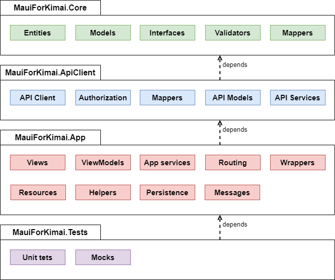

Architecture
Based on the architecture approaches available for .NET MAUI and its advantages and disadvantages, I have decided to use MVVM approach with the use of services without a clean architecture for my application. Services are abstracted by correspondent interfaces on which the application is dependent. The implemented application is divided into four main structures (libraries):
- MauiForKimai.Core,
- MauiForKimai.ApiClient,
- MauiForKimai.App,
- MauiForKimai.Tests.
MauiForKimai.Core
MauiForKimai.Core is a core library of the application. It is the most stable and it contains as little as possible external dependencies. It only have dependencies in form of NuGet packages for CommunityToolkit, sqlite database and FluentValidation. All other application libraries depend on this core library. In addition, this library contains entities for database tables, main data models classes and mappers, which map entities to models. It also incorporate essential interfaces and enums used across application and validators models.
MauiForKimai.ApiClient
MauiForKimai.ApiClient is a library, which contains auto-generated Kimai API client and its data transfer objects (DTOs). This API client is abstracted into interfaces in form of services, which implementation is then use in application to access data from API. More- over, mock implementation of these services is also used for unit test purposes. ApiClient library also contains implementation of authorization to Kimai and essential mappers be- tween API’s DTOs and application models. The implementation specifics about Kimai API integration into .NET MAUI are discussed in section [[ref to Kimai api integration]]. ApiClient has dependency only on Core library.
MauiForKimai.App
MauiForKimai.App is a concrete implementation of .NET MAUI application and its resources. It contains exact implementation of multi-platform views in XAML, applica- tion business logic in form of viewmodels, important application services such as access to persistent storage and routing. It also contains wrappers classes, which are used for abstraction of coupled code and application static resources. It depends on ApiClient and Core libraries.
MauiForKimai.Test
MauiForKimai.Test is a testing library, which servers for the unit testing of application. It contains fundamental unit tests with mock implementation of services, which are needed for testing purposes. It has dependency to .NET MAUI application.

The two main fundamentals of this architecture are the use of the MVVM approach and the use of services. On the first hand, the MVVM approach brings a correct separation of concerns within the application. Therefore, I can create reusable code across multiple views, which is relatively easy to test. On the other hand, the services abstract all essential features of application (data access, API access, authorization, routing, etc.). The one thing that glue everything together is a principle of dependency injection. Due to dependency injection, services are injected into the corresponding viewmodels and can be used to access data from abstracted entities. As a result of this, obtained data can be shown in the UI using data bindings. This fundamental concept of application is shown in Figure 4.6